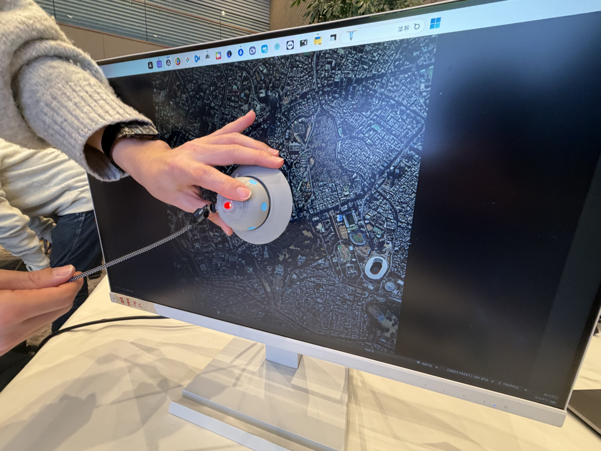
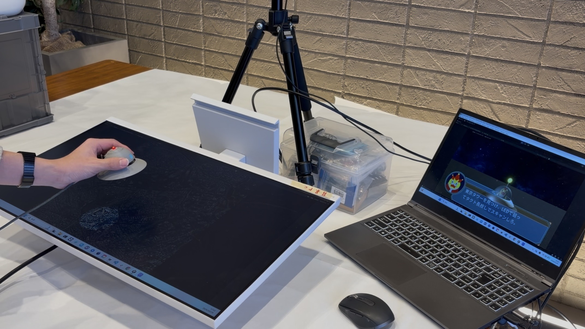

UFOで建物をキャッチせよ！


Processing,Arduino
本作品の舞台は，地球から離れたジロジロ星である．ジロジロ星には，地球に強い興味を持つ国王キンジローが暮らしている．キンジローは地球に出張している孫のソラジローの様子を， 日頃から望遠鏡で眺めている． ある日金ジローは，自身の庭に「地球の建物を建てたい！」と考え，ソラジローにその願いを託す．しかし，キンジローは地球の建物を上から見た姿しか知らない． そのため，ソラジローはキンジローのお願いの内容を手がかりに，どの建物なのかを推測して探すことになる．
航空写真をエンタメとして楽しめる体験を提案する．上から見ることで，普段は気づかない街や建物の形を発見でき，身近な風景にも新しい魅力を感じられるようにする． 体験者はソラジローとなってUFOに乗り，キンジローのお願いを叶えるために地球へ向かう．キンジローからは，建物や街並みを上から見た情報が与えられ，体験者はその特徴をもとに目的の建物を探す． 地球では，UFOに乗っている視点で街を見下ろしながら，お題に合う建物を探索する．そして，正解だと思う建物を見つけたらスキャンを行う．スキャンした建物はジロジロ星へ送信され，キンジローの庭に複製される．こうして，体験者は建物を見つけ出し，国王の願いを叶えるミッションに挑戦する．
普段私たちは，建物や街を目の高さから見ることがほとんどである．そのため，上から見た時に見えてくる形や広がりの面白さに，気づく機会は少ない．
また，航空写真は地図や記録として使われることが多く，楽しみながら見る物にはなっていない．
しかし，幼少期に教科書で日本銀行本店の写真を見てびっくりする．地上から見るとただの建物．しかし上からみると「円」の形．普通の街の風景でも，上から見たら面白そうかもしれない．．．そんな新しい視点を与える体験を目指す．